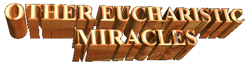
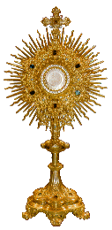
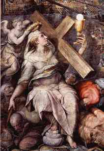
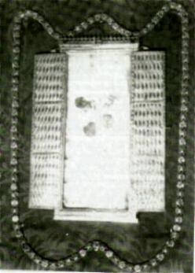
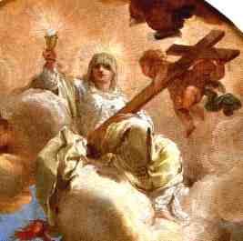
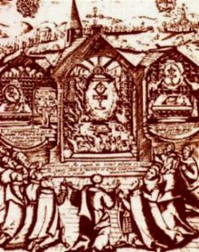
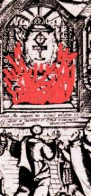
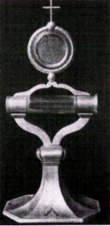
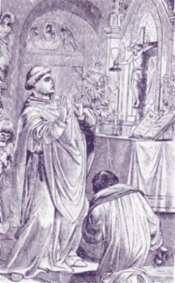
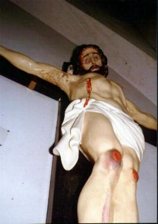

“HASSELT, Belgium, year 1317â€

A priest from Viversel, helping the priests in the city of Lummen, was asked to bring the Holy Eucharist to a man of the village who was ill. Taking with him one Host in a Ciborium, the priest entered the man's house and placed the Ciborium on a table while he went to speak with the family in another room.
While the priest was absent, a man who was in mortal sin wandered into the room, removed the cover of the Ciborium, touched the Host and then picked it up. At once the Host began to bleed. Frightened, the man dropped the Host into the Ciborium and quickly departed. When the priest returned for the Ciborium he found the cover removed, and he was astonished to see the Host spotted with blood.
At first undecided about what to do, the priest finally brought the Ciborium and the Host to the Bishop and related what had taken place. The Pastor advised him to carry the miraculous Host to the church of the Cistercian Nuns at Herkenrode, approximately 30 miles away.
This convent, founded near Liege in the 12th century, was the first foundation of the Cistercian Nuns in Belgium. (An outstanding member of this community was the stigmatist St. Lutgarde, who lived from 1182-1246). Because of this venerable community's reputation for holiness, the Bishop apparently felt that the Miraculous Host would be more appropriately enshrined in the convent's church.
The
priest journeyed to the Cistercian church, and as soon as he approached the
Altar and placed the Host upon it, a vision of Christ crowned with thorns, was
seen by everyone present. OUR LORD seems to have thereby given a special sign of
HIS willingness to be enshrined there. Because of this vision and
the 
The Host was securely kept in the church at Herkenrode until 1796, during the French Revolution, when the Nuns were expelled from their convent. During this dreadful time the Host was entrusted to the care of a succession of different families. It is said that it was once placed in a tin box and waited into wall up the kitchen of a house.
In 1804 the Host was removed from hiding and taken during solemn services to the Church of St. Quintinus in Hasselt. This picturesque church of Gothic architecture, dating from the 14th century, contains impressive paintings of the 16th and 17th centuries which recall events in the history of the Miracle. But much more important, the Church of St. Quintinus still guards the Miraculous Eucharistic Host of 1317, which remains in splendid condition.

“DAROCA, Spain, year 1239â€

The city's past seems still alive in its Roman, Moorish and medieval walls, castles, towers, plazas and streets. In its churches and museums can be found priceless art treasures of Roman, Gothic and Renaissance influence.
But of all the ancient structures and valuable art treasures, Daroca's greatest pride is the relic of the “Sagrados Corporalesâ€, the Sacred Corporals, dating back to 1239, the year of the Miracle.
In that year, when the city of Valencia was under the reign of the Catholic King Don Jaime, the Saracen King Zaen Moro decided to recapture the city with fresh troops brought from the northern states of Africa. The Catholic king learned of the Saracen's intentions, and knowing that Moro's troops were more superiors in quantity, he ordered an outdoor Holy Mass to be offered, encouraging his soldiers to receive the Holy Eucharist together with their captains. King Jaime assured his soldiers that if they were thus fortified they would be able to do battle without fear and with purity on their hearts.
Immediately after the
distribution of Holy Communion, the Saracens made a 
After the battle, as the Saracen troops retreated in disgrace, the Catholic soldiers returned and knelt before the Altar to give thanks to GOD for their decisive victory. The priest, in the meantime, attempted to locate the Hosts in their hiding place and had great difficulty in doing so until divine inspiration finally assisted him.
Recovering the cloth, he unfolded them, but was amazed to find that the six Hosts had disappeared, leaving six blood stains. Wondering what motives GOD had had for bringing about such a miraculous occurrence, he at last decided that it was a sign of GOD's protection and love for the Catholic troops. The priest then took the bloodied corporals to the soldiers for their inspection and veneration.
For motive that the Mass had been offered in the field, well outside the city of Valencia, three towns:Teruel, Catalayud and Daroca, all claimed that the Miracle had occurred within their jurisdictions. All three claimed that the Holy Corporals should be given to them for safekeeping. The matter was long debated until it was finally decided that the matter would best be settled by chance. All agreed that the cloths should be placed on the back of a mule and that the animal would be allowed to wander to whichever town to direction chosen. A uncommon decision! The mule chose the gate of the city of Daroca.
A church was soon built in Daroca as a repository for the blood stained corporals. Enlarged in the 15th and 16th centuries, it is now known as St. Mary's Collegiate Church (the Colegiata). On the walls of the Holy Relics Chapel are scenes of the Miracle, along with numerous multicolored alabaster statues in medieval poses. This shrine contains the Corporals on which the stains of blood are still clearly visible.
The Miracle is said to have been widely known in its day, and it is mentioned in many official documents, especially in documents of the year 1340. The Miracle is said to have been ". . . the subject of much bibliography in the 15th century, and the story has been told by many a famous pen."
For more than seven centuries the “Sagrados Corporales†have been Daroca's revered and cherished possession.

“FAVERNEY, France, year 1600â€

The abbey in whose church the miracle occurred had been founded by St. Gude in the eighth century. It was established under the rule of St. Benedict, and was named Notre Dame de la Blanche, Our Lady of the White, in honor of a small statue that is now situated in the chapel to the right of the choir. The abbey originally housed nuns, but monks replaced the nuns in 1132.
The religious life of the abbey in the early 1600's was not as fervent as it should have been. The lack of spiritual stimulate on the Community reflect the difficult appearance of vocations. The Community numbered only six monks and two novices. In order to maintain the people's faith, then weakened by the Protestant influence of the time, the monks held certain annual ceremonies, including adoration of the Blessed Sacrament in honor of Pentecost, and the Monday following the feast. In preparation for the ceremonies, an altar of celebration was arranged before a decorative grille near the entrance gate of the choir.
In 1608 the services on Pentecost Sunday were attended by a great number of people. At nightfall, when the doors to the church were shut and the monks were preparing to retire, two oil lamps were left burning before the Blessed Sacrament, which was left exposed on the altar in a simple Monstrance.

News of this prodigy spread quickly, and villagers and priests from surrounding areas soon filled the church. The Capuchin friars of Vesoul, too, hurried to witness the spectacle. Many knelt in awe before the suspended Monstrance, while a great many of the skeptics approached to examine the miracle for themselves. Throughout the rest of the day and during the night no restrictions were made, and the curious were permitted to move freely about the area.
During the early morning hours of Tuesday, May 27, priests from surrounding neighborhoods took turns offering Holy Mass in unbroken sequence while the prodigy continued, At about 10 a.m., at the time of the Consecration of the Mass celebrated by Father Nicolas Aubry, Parish of Menoux, the congregation saw the Monstrance shift its angle to a vertical position and slowly descend to the altar that had been brought in to replace the one destroyed in the fire. The suspension of the Monstrance had lasted 33 hours.
As early as May 31, an inquiry was ordered by His Grace Archbishop Ferdinand de Rye. Fifty‑four depositions were collected from monks, priests, peasants and villagers. Two months later, in July 30, 1608, after studying the depositions and the material collected during his investigation, the Archbishop decided in favor of the miracle.
Aspects of the Miracle:
Burned
in the fire were the altar-which, except for its legs, was reduced to a
heap of ashes-and all the altar linens, as well as certain ornaments. One
of the two chandeliers that decorated either side of the altar was found melted
from the heat-yet despite this heat, the Monstrance was preserved from
harm. The two Hosts in this vessel remained intact, suffering only a slight
scorching. Four articles inside a crystal tube attached to the Monstrance were
also spared injury; these included a relic of St. Agatha, a small piece of
protective silk, a papal proclamation of indulgences, and an episcopal letter
whose wax seal melted and 
Concerning the suspension of the Monstrance, 54 witnesses, including many priests, they have affirmed that while the vessel seemed to incline toward the grille, the little cross on top of it was not in contact with this grille-in fact, it remained a goodly distance from it.
The witnesses also they have affirmed that the Monstrance had remained without support for 33 hours.
Those that witnessed and they have given sworn statements, also they have signed a document which is still preserved in the church.They also swore that the suspension of the vessel was not affected by the vibrations of the people who moved around the miracle, nor of the people constantly coming in and going out of the church, of those standing and whispering beside the burned altar, of those who touched the grille, nor of the activity of the monks in removing the effects of the fire and assembling a temporary altar in the same location.
A marble slab was installed beneath the place of the suspension to mark the location of the miracle. Chiseled on the slab are the words, Lieu Du Miracle, i.e., Place of the Miracle.
In December of the year of the miracle, 1608, one of the two Hosts that were in the Monstrance at the time of the miraculous suspension was solemnly transferred to the city of Dole, which was then the capital of the county.
During the time of the French Revolution the Monstrance of the Miracle was unfortunately destroyed, but the Host was preserved from harm by members of the municipal council of Faverney, who kept it hidden until the danger passed. Later, the Monstrance was reproduced from paintings dating before the Revolution. Kept within the New Monstrance is this same Host that had maintained a miraculous suspension for 33 hours, after surviving a fire of such heat that a nearby chandelier was reduced to melted ruins!

“REGENSBURG, Germany, year 1257
For many years there were in
Regensburg (formerly called Ratisbon) two chapels 
The oldest was founded in the year 1255. In March 25 of that year, which was Holy Thursday, a priest named Dompfarrer Ulrich von Dornberg was scheduled to bring the Blessed Sacrament to the sick members of his parish. In reaching a little stream called Bachgasse, the priest carefully set foot on the narrow plank that served as a bridge and promptly slipped, dropping the Ciborium he was carrying. The Hosts spilled from the vessel onto the bank of the stream and it was with some difficulty that the priest collected them because of the mud.
The parishioners, on hearing of the accident, they have decided to build a chapel on the site where the Hosts they had been soiled, in reparation for the disrespect done to the Blessed Sacrament, even though the incident had been unintentional. The erection of a wooden chapel was started the same day and was completed three days later, in March 28. Bishop Albert of Regensburg called the little wooden structure St. Saviour's Chapel and consecrated it on September 8, 1255.
The miracle most famous of Regensburg occurred in this chapel two years later.

In the end of the celebration, the priest respectfully kissed the Crucified CHRIST'S feet and he left the place quickly. Never again he was seen. Some people have said that he entered in a Monastery in Ulms and stayed there recluse until your death.
After this miracle great crowds have visited the church. The wooden chapel was replaced with a stone structure in 1260. Sometime after the stone Chapel was completed, its name was changed from St. Saviour's Chapel to Kreuzkapelle or "Cross Chapel" in honor of the miraculous crucifix that was greatly venerated there.
In 1267 a monastery was built beside the stone chapel. It was entrusted to the Eremitical Augustinians, who maintained it until the year 1803. In 1855 the Chapel was occupied by the Lutherans. The sacred relics were saved and kept by zealous Christians. In 1917 the Chapel was demolished during World War I.
Remembering the miracle, annually services and processions are accomplished in honor of the Most Holy Eucharist.
Regensburg is placed in Bavaria, south of Germany, near Munich. In that time it belonged to the administration of Munich. In the files of Munich's Archdiocese these events are registered, but the name of the priest has been hidden.